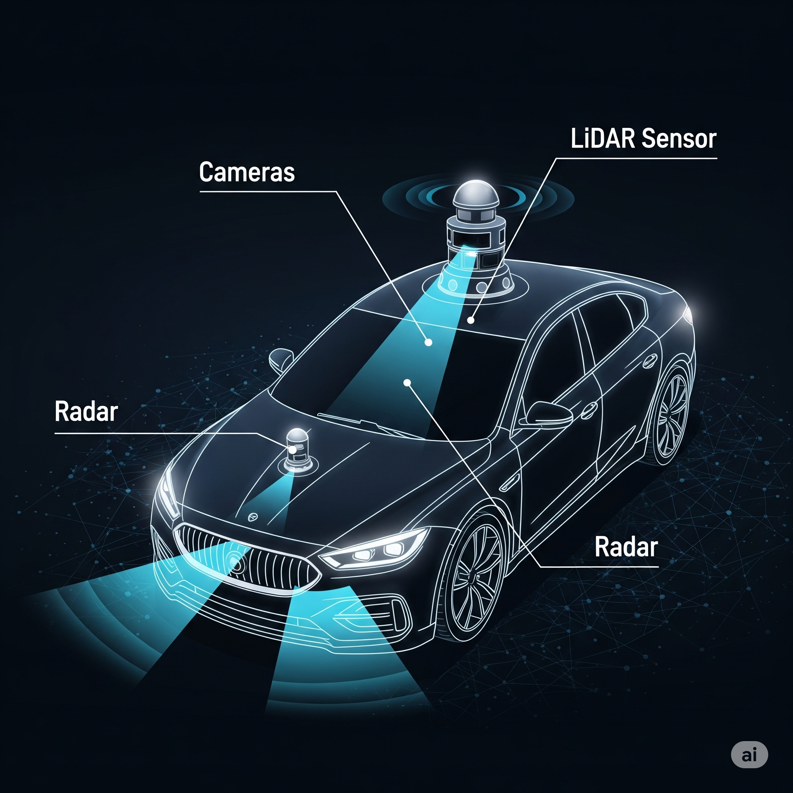

¡Felicidades! Has activado el sensor de proximidad ultrasónico. Este sensor funciona como los oídos de un murciélago, emitiendo ondas de sonido que rebotan en los objetos. Al medir el tiempo que tarda en volver el eco, el robot puede "ver" y calcular la distancia para no chocar.
Reto Interactivo: ¡Visión de Cíclope! 🤖
Tu cerebro usa tus dos ojos para crear una imagen 3D y juzgar la distancia perfectamente. El sensor ultrasónico es como tener un solo 'ojo' sónico. ¡Vamos a probar la diferencia!
1. El Experimento
Pídele a un compañero que sostenga un lápiz quieto en el aire. Ahora, **cierra un ojo** e intenta tocar la punta con tu dedo en un solo movimiento rápido.
¿Fue más difícil de lo que pensabas? Esa duda para juzgar la profundidad es la gran limitación de un robot con un solo sensor.
Actividad Visual: ¡Tu Turno de ser el Robot!
Observa el objeto de abajo. Si fueras un robot que solo "ve" con un ojo, sin percepción de profundidad, ¿cuál de los dos dibujos de abajo harías? **¡Haz clic en tu elección!**
Objeto Real
Dibujo A
Dibujo B
La respuesta correcta es el **Dibujo A**. Un robot con un solo sensor percibe el mundo de forma plana, como una serie de distancias. Le cuesta mucho construir una imagen tridimensional con profundidad, al igual que a ti te costó tocar el lápiz con un ojo cerrado.
Reflexión Final: ¿Por qué más es mejor?
Basado en los experimentos, ¿por qué los coches autónomos más avanzados usan una combinación de **MÚLTIPLES sensores** (cámaras, radares, etc.) en lugar de confiar en uno solo?
